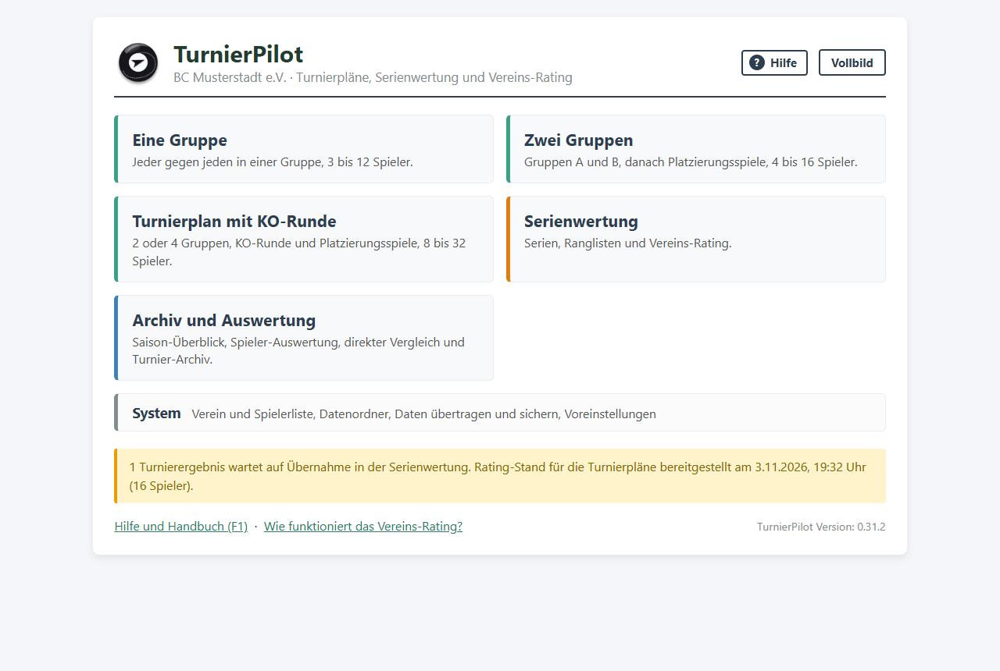
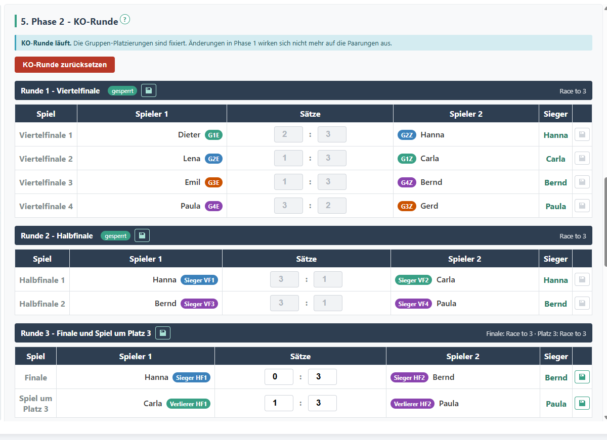
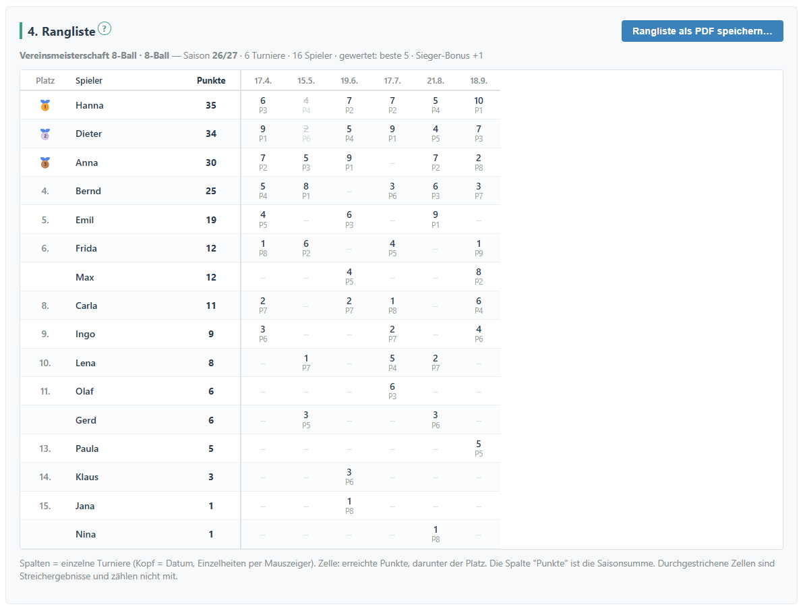
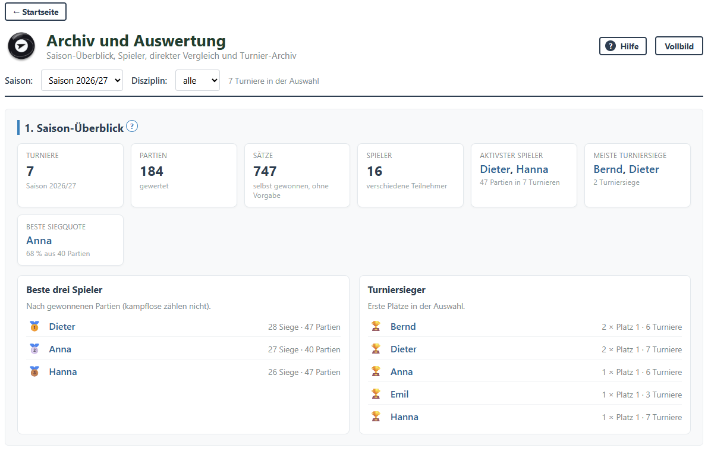

Turnierpläne
- Eine Gruppe: jeder gegen jeden, 3 bis 12 Spieler
- Zwei Gruppen mit Platzierungsspielen, 4 bis 16 Spieler
- Gruppen mit KO-Runde, 8 bis 32 Spieler
Das Windows-Programm für Billard-Turniere im Verein. Turnierpläne, Serienwertung, Vereins-Rating und Auswertung. Alles läuft auf einem Rechner, ganz ohne Internet und ohne Konto.
Für Windows 10 und 11 · aktuelle Version auf GitHub

Alles liegt im Ordner Dokumente\TurnierPilot, jeden Tag mit automatischer Sicherung. Nichts wird ins Internet übertragen.
Turnier-Dateien lassen sich zwischen TurnierPilot und CueDesk austauschen. So könnt ihr später umsteigen oder beides nutzen.
Bis zu vier Gruppen, danach Viertelfinale, Halbfinale, Finale und Spiel um Platz 3. Das Race lässt sich je Runde einstellen. Die Paarungen ergeben sich aus den Gruppenplätzen.

Gespeicherte Turniere können einer Serie zugeordnet werden. Die Rangliste rechnet von selbst, auch mit Streichergebnissen.

Der Saison-Überblick zeigt Turniere, Partien und die besten Spieler. Für jeden Spieler gibt es eine eigene Auswertung als PDF.

Alle Bilder zeigen erfundene Spieler.
Den Installer TurnierPilot-Setup-<Version>.exe herunterladen und speichern.
TurnierPilot herunterladenWindows meldet „Der Computer wurde durch Windows geschützt“, weil der Installer nicht signiert ist. Auf Weitere Informationen und dann Trotzdem ausführen klicken.
Beim ersten Start unter System Verein und Spielerliste eintragen. Die Hilfe (F1) führt durch alles.
TurnierPilot sucht nach dem Start nach einer neuen Version und fragt, ob es sie installieren soll. Von Hand geht es über Hilfe → Nach Updates suchen…. Eure Daten bleiben dabei erhalten.
Ältere Version installiert? Versionen vor 0.32.0 suchen noch nicht selbst nach Updates. Installiert einmal den neuen Installer über die vorhandene Version. Die Daten bleiben erhalten, danach geht es automatisch.
Turnierrechner ohne Internet? Installer auf einem anderen Rechner herunterladen und per USB-Stick mitnehmen.
TurnierPilot läuft auf einem Rechner ohne Internet. CueDesk läuft im Browser, mit Tablets an den Tischen, Live-Anzeige, Liga-Spieltagen und Konten für Mitglieder.